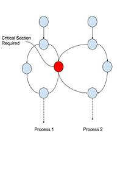

Introduction
Suleman, Mutlu, Qureshi, and Patt (2009) address the problem that Amdahl’s law makes painfully clear:
$$ \operatorname{speedup}(N) = \frac{1}{1 - P + \frac{P}{N}}, $$where $\operatorname{speedup}$ is the ratio of single-threaded execution time to $N$-threaded execution time.
As $N$ grows, $\operatorname{speedup}(N)$ approaches $1/(1-P)$. Even if 99% of the work is parallel, the maximum speedup is only 100. The sequential portion of code, no matter how small, eventually dominates. To get scalable performance with increasing thread counts, you have to attack the serial bottleneck aggressively.
Accelerated Critical Sections (ACS)
A common source of serialization is critical sections: code blocks guarded by locks to enforce mutual exclusion.

Critical section
The authors propose Accelerated Critical Sections (ACS). The idea: use an asymmetric multi-core processor where one core is four times the size of the others, and dedicate that large core to executing critical sections on behalf of the smaller cores. Critical sections run faster, serialization time drops, and you get better scaling.
Trade-offs
The idea is clean, but the engineering tradeoffs are where it gets interesting.
Trade-off 1: Faster critical sections vs. fewer threads
The large core takes up the area of 4 small cores, so you have fewer cores available for parallel work. Two things mitigate this.
First, as the transistor budget grows, the marginal cost shrinks. With a budget of 32 small cores, you trade 4 cores for the large one and keep 28. That is 87.5% of your original core count. With a budget of only 8, you keep 4 out of 8. The math gets friendlier as chips get bigger.
Second, critical section contention grows with core count, so the additional threads you would have had deliver diminishing (or negative) returns anyway. ACS helps precisely when scaling hurts most.
Trade-off 2: Cache misses from private vs. shared data
When a small core sends its critical section to the large core, any private data referenced in that section has to transfer. That costs cache misses. But critical sections frequently access shared data, and having a single large core that owns the shared data improves cache utilization for those accesses.
If shared data accesses in critical sections outnumber private data accesses (which is typical), this tradeoff tips in favor of ACS.
Trade-off 3: Communication overhead
When a small core hits a critical section, it issues a request to the large core. The request goes into a queue (the Critical Section Request Buffer, CSRB). There is communication overhead here that would not exist if the section just executed locally.
But consider the alternative: multiple cores fighting over a shared lock, propagating lock state across remote caches. If the lock is usually owned by the large core, synchronization overhead drops. The communication cost of ACS can be less than the synchronization cost it replaces.
Trade-off 4: False serialization
If a program has many disjoint critical sections (different locks, no contention between them), executing them all on the large core forces them to run sequentially for no reason. The authors call this “false serialization.”
Their solution: a heuristic that counts how many requests in the CSRB target different locks. If the count exceeds a threshold for a given lock address, ACS is disabled for that lock, and threads acquire it locally. It is not perfect, but it avoids the worst cases.
Results: ACS vs. SCMP and ACMP
The authors compare three systems:
- SCMP: Symmetric CMP, all cores the same size
- ACMP: Asymmetric CMP, one large core but not dedicated to critical sections
- ACS: Asymmetric CMP with the large core dedicated to critical section acceleration
They simulate rather than fabricate, giving each system identical transistor budgets and running the same benchmarks. They vary the area budget (8, 16, 32 small-core equivalents) and split the benchmarks into coarse-grained locking (10 or fewer critical sections) and fine-grained locking.
Coarse-grained benchmarks: ACS wins 5 of 7 even at 8 cores. One exception is parallelized quicksort, which has low contention and heavy private data access, exactly the scenario where ACS loses. At 32 cores, ACS beats SCMP by 42% and ACMP by 31%.
Fine-grained benchmarks: At 8 cores, ACS beats ACMP by 20% but loses to SCMP by 37%. Contention is low enough that SCMP’s extra cores matter more than faster critical sections. But at 32 cores, ACS pulls ahead: 17% over SCMP and 13% over ACMP. Contention catches up.
An important detail: on SCMP, you often had to reduce the thread count below the total core count to avoid contention-driven degradation. On ACS, performance scaled more consistently up to 32 cores with room for growth.
Conclusion
ACS outperforms both SCMP and ACMP on all representative benchmarks at 16 or more cores, and holds its own at lower core counts (especially for coarse-grained workloads). As core counts and contention continue to rise together, the advantage should only grow. It is a simple architectural insight with real practical consequences.
Discussion